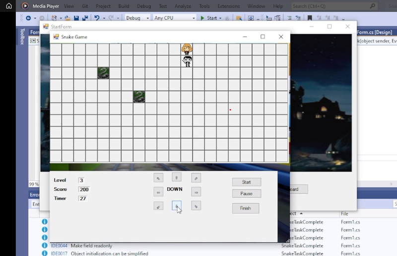

Snake Game
A Year 1 Semester 2 Object Oriented Programming project that used C# to build a Harry Potter themed game with level-based progression, snake removal, and point scoring.

Snake Game was a school-related project built during Year 1 Semester 2 for the Object Oriented Programming module. The task was to create a simple game using C#, and I developed mine with a Harry Potter theme and multiple levels to make the experience more playful and distinctive.
The game increased in difficulty as players progressed because the number of snakes grew across levels. As the first character removed a snake, another character would join, and each successful removal increased the score by 50 points. The project took about four weeks and gave me hands-on experience applying object-oriented thinking to interactive game behaviour.
Gameplay idea
- Built as a simple game project inspired by snake-based mechanics for coursework practice.
- Used a Harry Potter theme to give the project a more recognisable visual identity.
- Focused on clearing snakes while tracking score changes as the game progressed.
Level progression
- Included multiple levels where the number of snakes increased over time.
- Added another character after the first character removed a snake, increasing activity in later stages.
- Rewarded each successful removal with a 50-point increase.
Programming focus
- Implemented the project entirely in C# as part of learning object-oriented programming fundamentals.
- Used code structure to manage gameplay behaviour, level logic, and scoring rules.
- Strengthened programming foundations that supported later software and web development work.